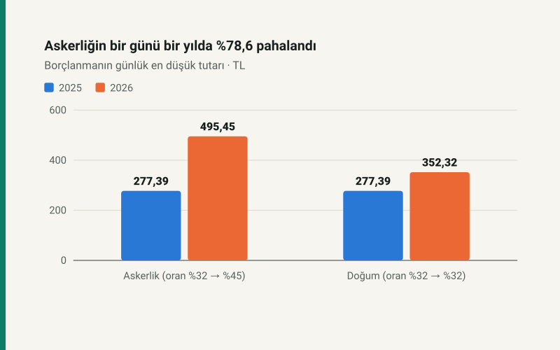

Kısa cevap
Borçlanma tutarı gün × günlük kazanç × orandır. Günlük kazanç en az brüt asgari ücretin otuzda biri (2026'da 1.101 TL), en çok tavanın otuzda biri (9.909 TL). 2026'da iki çarpan birden büyüdü: asgari ücret 1,2701 kat, oran 1,4063 kat. Çarpımları 1,7861: askerlik borçlanması bir yılda %78,6 pahalandı.
Doğum borçlanmasında oran %32'de kaldı; tutarı yalnız asgari ücret kadar, %27 arttı.
2025 ve 2026
| Gün | 2025 en az | 2026 en az | 2026 en çok |
|---|---|---|---|
| 180 gün | 49.930,20 TL | 89.181,00 TL | 802.629,00 TL |
| 360 gün | 99.860,40 TL | 178.362,00 TL | 1.605.258,00 TL |
| 540 gün | 149.790,60 TL | 267.543,00 TL | 2.407.887,00 TL |
| 720 gün | 199.720,80 TL | 356.724,00 TL | 3.210.516,00 TL |
Doğum borçlanmasında 720 gün en düşük kazançla 2025'te 199.720,80 TL, 2026'da 253.670,40 TL. Aynı gün sayısında askerlik ile doğum borçlanması arasındaki fark 2025'te yoktu; 2026'da 103.053,60 TL.
Neden bu kadar arttı?
7566 sayılı Kanun malullük, yaşlılık ve ölüm sigortası primini bir puan artırırken hizmet borçlanmasının oranını %32'den %45'e çıkardı; doğum borçlanması bu değişikliğin dışında tutuldu. Oran %40,6 arttı, asgari ücret %27,0: 1,4063 × 1,2701 = 1,7861.
Kazanç seçimi
Günlük kazancı borçlanan seçer. En yüksek kazançla askerlik borçlanması en düşüğün dokuz katıdır; karşılığında emekli aylığının hesabına daha yüksek kazanç girer. Borçlanma tutarı başvuru tarihindeki kazanç sınırları ve oranla hesaplanır.
Kendi gün sayınızla: borçlanma hesaplama.
Kaynaklar
- 5510 sayılı Kanun m.41 (borçlanılabilecek süreler) ve m.82 (prime esas kazanç sınırları).
- 7566 sayılı Kanun (Resmî Gazete, 19 Aralık 2025): borçlanma oranı %45, doğum borçlanması hariç.
- SGK 2026/2 Genelgesi: 2026 günlük kazanç alt ve üst sınırları ile borçlanma tutarları.
Tutarlar sitenin bordro parametrelerinden (sigortalilik bloğu) ve SGK prim modülünden üretilir; otomatik test genelgedeki günlük tutarları (495,45, 352,32, 277,39 TL) sabitler.
Sık sorulan sorular
Askerlik borçlanması 2026'da ne kadar?
En düşük kazançla günü 495,45 TL: 360 gün 178.362,00 TL, 540 gün 267.543,00 TL. En yüksek kazançla günü 4.459,05 TL.
Askerlik borçlanması neden pahalandı?
Oran %32'den %45'e çıktı (7566 sayılı Kanun) ve asgari ücret %27 arttı; ikisi birlikte günlük tutarı %78,6 artırdı.
Doğum borçlanması da arttı mı?
Oran %32'de kaldı; günü en az 352,32 TL. Artış yalnız asgari ücret kadar, %27.